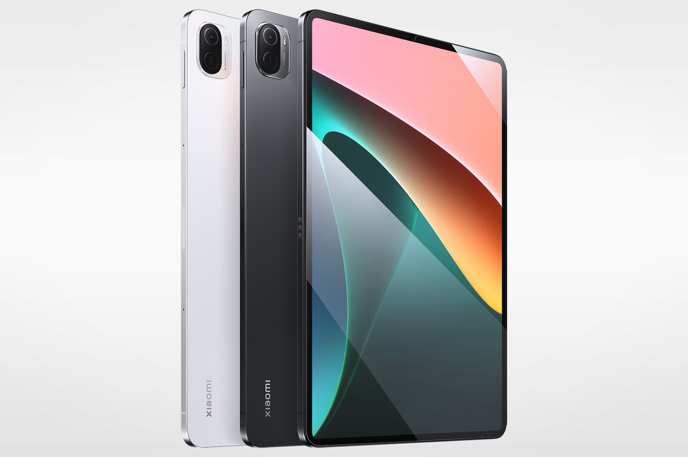

RIVALE DE L’IPAD PRO, CETTE TABLETTE VAUT SURTOUT 3X MOINS CHER

Le Mi Pad 5 de Xiaomi a droit à une remise XXL sur AliExpress, que ce soit la version 128 Go ou 256 Go.
Attention, stock ultra limité!
AliExpress a beau ne pas faire les soldes officiellement cet été,
le marchand en ligne y va très fort. Défait du cadre légal de l’opération spéciale,
il peut dévoiler ses propres offres qui concernent même des produits de référence.
Dans la liste, on retrouve la tablette Mi Pad 5 de Xiaomi.
Grâce à l’offre en cours, la tablette Mi Pad 5 de Xiaomi est au prix de 292 euros seulement au
lieu de 349 euros à sa sortie. Il faut cumuler le code 22ETE15 et le coupon vendeur de 6 euros
pour s’offrir l’appareil au prix le plus bas sur AliExpress.
Si le Mi Pad 5 de Xiaomi en version 128 Go passe à 292 euros avec cette offre, la version 256 Go de la tablette n’est pas épargnée. Avec le code 22ETE20, son prix chute également au point qu’il passe à 338 euros. Que ce soit avec l’une ou l’autre des déclinaisons de ce modèle incontournable, vous êtes certain de faire des économies. Toutefois, les stocks sont très bas dans les deux cas,
alors n’attendez pas trop longtemps.